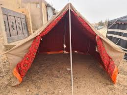
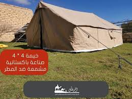

ما هي خيمة الرحاله ؟
خيمة التسلق (أو خيمة الرحلات) هي نوع من الخيام الخفيفة والمحمولة، مصممة خصيصًا لتكون سهلة الحمل والتركيب خلال الرحلات والمغامرات في الطبيعة. تُستخدم هذه الخيمة من قبل المتسلقين، الرحالة، والمخيمين لتوفير مأوى مريح وخفيف الوزن.
---------------------
كيف تنصب خيمة الرحاله ؟
١.بنتقسم ٨~١٠ اشخاص علشان تبدأ ننضاف الخيمه من التراب ازاى؟
٢.نبداء نظبطها على الارض علشان هنجيب ٣ حاجات الدقماق و سارى طويل او ٢ قصير و الاوتاد من ١٠~١٢ و طبعا سيزيل
اهم حاجه و احنا بنعمل الخيمه الباب بتعها يبقى مع طيار الهواء ليه ؟
اول حاجه بنبداء بيها هى السارى واحد بالعرض و بتطول علشان هنوقف عليه الخيمه
.نبداء ب الاوتاد ٢ عند كل باب علشان نشيد الخيمه و ٣ او ٤ من كل جمب لازم الخيمه تكون مشدوده بزاويه 45 و ممكن مكان الاوتاد حجاره لو احتجناه
اهم حاجه و احنا بنعمل الخيمه الباب بتعها يبقى مع طيار الهواء ليه ؟
اول حاجه بنبداء بيها هى السارى واحد بالعرض و بتطول علشان هنوقف عليه الخيمه
.نبداء ب الاوتاد ٢ عند كل باب علشان نشيد الخيمه و ٣ او ٤ من كل جمب لازم الخيمه تكون مشدوده بزاويه 45 و ممكن مكان الاوتاد حجاره لو احتجناه
---------------------
مميزات خيمة الرحاله
وسعه
---------------------
عيوب خيمة الرحاله
وقت
المكان
ادوات اكتر
تقيله
المكان
ادوات اكتر
تقيله
---------------------

